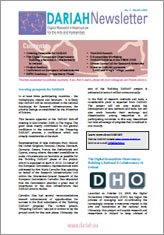
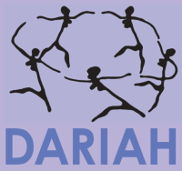
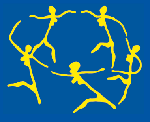

|
Welcome
The mission of DARIAH is to enhance and support digitally-enabled research across the humanities and arts. DARIAH aims to develop and maintain an infrastructure in support of ICT-based research practices.
DARIAH is working with communities of practice to:
- Explore and apply ICT-based methods and tools to enable new research questions to be asked and old questions to be posed in new ways
- Improve research opportunities and outcomes through linking distributed digital source materials of many kinds
- Exchange knowledge, expertise, methodologies and practices across domains and disciplines
|
|
Latest News
Announcing the release of the DARIAH Newsletter, issue 2! In this issue: - Growing Prospects for DARIAH
- The Digital Humanities Observatory: Building a National E-Collaboratory in Ireland
- Project Bamboo
- Conference on European Infrastructures
- ESFRI Roadmap, Preparatory Phase
- TextGrid Summit
- E-Humanities Workshop
- DARIAH Exhibits at the VSMM 2008
- Greece Opens Call for Research Networks
- Focus on DARIAH partners: DANS and King's College London
Download the complete newsletter
|
The 4th IEEE International Conference on e-Science was held at Indiana University–Purdue University Indianapolis (IUPUI) in Indianapolis, Indiana, USA from 7th to 12th December 2008. As part of the conference, DARIAH partners were involved in two workshops: “e-Humanities - An Emerging Discipline” and “Adding Value to Data - Digital Repositories in the e-Science World”. The main objective of both workshops was to emphasize the current need for global repositories of digital data and their accessibility for academic and other researchers. In order to provide an integrated network in which all humanities data can be deposited and accessed in unified manner, digital data should be stored in a large grid-based infrastructure with an intuitive interface for easy data handling. In addition, computational grids offer applications in digital preservation and publication, such as automatic metadata extraction and index creation. Data grid infrastructures serve research by gathering and preserving data from disparate institutions. In order to enable interoperability of the digitalized data, considerable efforts are required to develop standards for all levels (e.g., character encoding; semantics of meta-data; access rights, to name a few). Grid infrastructures will realize their full benefit to researchers only if obstacles to interoperability are fully surmounted. For more information on DARIAH’s participation in the conference workshops, see the links below. Audio and video recordings of the workshops are available.
In at least three participating countries – the Netherlands, Ireland and Denmark – it is likely that DARIAH will be incorporated in the national Roadmaps for Research Infrastructures, the priority listings as established by the Ministries of Science.
This became apparent at the DARIAH kick-off meeting in late October in The Hague. The good news clearly contributed to the general confidence in the outcome of the ‘Preparing DARIAH’ process, a confidence which was already considerable at the start.
Representatives of data institutes from Ireland, the United Kingdom, Slovenia, Croatia, Denmark, Germany, Greece, France, the Netherlands and Cyprus, among others, discussed possibilities to make circumstances as favorable as possible for the ‘Building DARIAH’ phase of the project, which is supposed to start in 2010. On behalf of the European Commission, representatives were addressed by Mrs. Maria Carvalho Dias, speaking on behalf of the Research Infrastructures Unit within the Directorate-General Research of the European Commission. Carvalho Dias stipulated that the Commission attaches a great deal of importance to the data infrastructure that DARIAH aims to realize.
Carvalho Dias had several recommendations toward enhancement of opportunities for success in the final submission of the ‘Building DARIAH’ proposal. The current project, ‘Preparing DARIAH,’ was put in motion to lay the ground work for this next phase. Ultimately, the size of the ‘Building DARIAH’ project is estimated at some 6 million euros annually.
In the field of research methods and tools, a considerable yield is expected from DARIAH. The project will not only enable the development of new methods and tools, but will also work towards their exchange and dissemination among researches in all participating countries. In this way, researchers can take advantage of progress that is realized in one country.
 DARIAH and its partners are pleased to report on the recent launch of the Digital Humanities Observatory (DHO), a project of the Royal Irish Academy. Susan Schreibman, Director of the DHO, is a member of the DARIAH Steering Committee for the Irish Research Council for the Humanities and Social Sciences. DARIAH and its partners are pleased to report on the recent launch of the Digital Humanities Observatory (DHO), a project of the Royal Irish Academy. Susan Schreibman, Director of the DHO, is a member of the DARIAH Steering Committee for the Irish Research Council for the Humanities and Social Sciences.
From the DHO website: The DHO has in a few short months begun to effectively establish its presence and deliver on its pledge to become a knowledge resource providing outreach and education on a broad range of digital humanities topics. As a digital repository it positioning itself to provide data management, curation, and discovery services supporting long-term access to, and greater exploitation of, digital resources in the creation of new models, methodologies, and paradigms for 21st century scholarship.
Wednesday, 22 October 2008
DARIAH will hold its kick-off meeting in The Hague (NL) October 27th and 28th, 2008. The kick-off meeting brings together representatives of all fourteen DARIAH partners for two days of discussion, development and planning.
All fourteen partners share in the excitement of launching this ambitious and much-needed project to develop a research infrastructure for the arts and humanities. The kick-off marks the beginning of fruitful, multi-year collaboration between partners towards a common goal. Peter Doorn, Director of DANS and head of DARIAH, describes the project this way: DARIAH aims to serve a great variety of disciplines by bringing together, for the benefit of scholars, heterogeneous data resources from all European countries, and providing the tools for easily accessing and working with them. Our ambition will be to keep it as straightforward and transparent as possible for the researcher. Attending the kick-off meeting on behalf of the European Commission will be Hervé Pero, Head of Unit (Research Infrastructures) in the EC Directorate-General for Research. Mr. Pero will speak about the development of research infrastructures at the European level, actions during the preparatory phase of DARIAH, and his views regarding the importance of the project.
DARIAH partner discussions will focus on details of the various work packages, with parallel sessions running on the subjects of dissemination, governance, logistical work, and technical infrastructure.
|
|
|
|
|
|
Page 28 of 30 |
|
Information brochure

Download PDF 
|